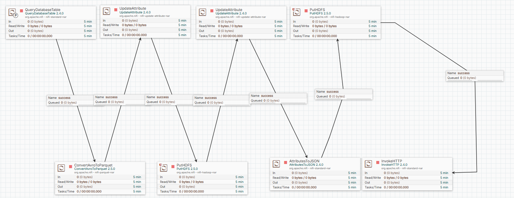

Apache Nifi
Flow Definitions (JSON) locations
The NiFi flow definitions are stored as JSON files in the Apache Nifi directory. These files can be imported into your NiFi instance to recreate the data ingestion workflows.
Individual Table Flows
Location: Apache Nifi/Individual Flows/
Address_table.json- Address data ingestion flowCreditCard_table.json- Credit card data ingestion flowCurrencyRate_table.json- Currency rate data ingestion flowCustomer_table.json- Customer data ingestion flowPerson_table.json- Person data ingestion flowSalesOrderHeader_table.json- Sales order header data ingestion flowShipMethod_table.json- Shipping method data ingestion flowStore_table.json- Store data ingestion flowTerritory_table.json- Territory data ingestion flow
Complete Platform Flow
Location: Apache Nifi/Whole Flow/
Sales_Data_Platform_Project.json- Complete integrated flow for the entire sales data platform
Importing into NiFi
To import these flows into your NiFi instance: 1. Open the NiFi web interface 2. Navigate to the canvas or process group where you want to import the flow 3. Use the upload template or import flow functionality 4. Select the appropriate JSON file from the locations listed above 5. Configure any necessary parameters or connections as needed
Images Overview
Address Workflow
